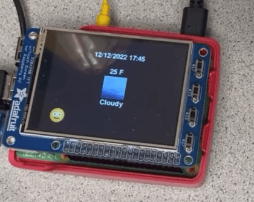
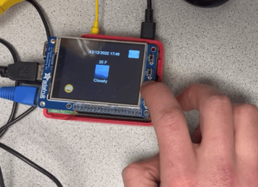
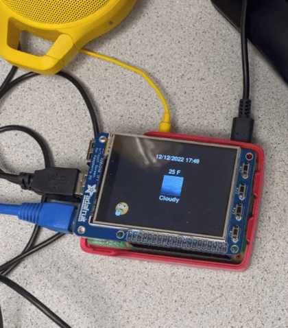
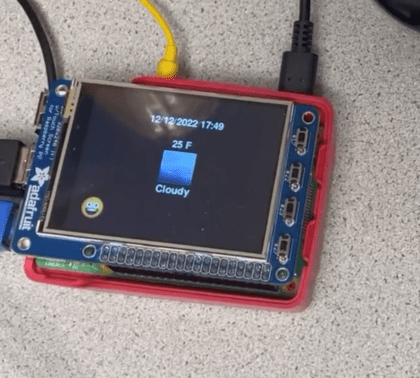

Devlin Babcock, dsb298
Yen-Hsing Li, yl2924

Our project is an Alexa-type personal assistant device. This device can receive voice commands to complete specific tasks. This is done by holding down a button and speaking to the device using PyAudio. Some of the commands this device can accept are checking the weather, getting the time, making and reading a note, and setting a timer.
We began our project by trying a few different machine learning models that can run on the pi for speech to text. Some versions that we tried are Whisper AI, Vosk, and an older free version of Googles speech recognition. While both of these run very fast on the pi, they are not accurate enough to be used. For example, we recorded ourselves saying “Turn on the light.”, and Vosk translated it as “Turn off the light.”. While the translation is close, it performs the opposite action that we want,
making the entire project perform poorly. Because of this, we wanted to use a more powerful, albeit slow, model like Whisper AI, which was able to translate almost everything we said perfectly. The issue is that Whisper AI is very slow, and can take 10 seconds or more to translate. We ended up going back to Vosk and adjusting some settings, such as changing the sample rate to 44100, and we were able to get it to translate with good accuracy.
With this, we added text to speech so that the device and respond to us. We used pico2wave to accomplish this. This is a command line text to speech tool that we simple call using os.system. To make sure all of this works, we set up the device to repeat everything we say to it.
With this in place, we were able to make a setup for receiving commands. We wanted to make this modular so that it would be easy to add as many commands as we wanted. The way we ended up doing it is that we first receive the audio data from the user. With this, we convert the audio into text and use the python "split" method to turn the string into a list of strings.
We then compare this list of strings to a list of keywords. For example, you could say "please make a note", and the device would compare that to our list of keywords and find "make note" to determine that is should make a note.
To actually run commands, we created a dictionary. The keys in the dictionary are the commands, such as "make note". The values are function pointers that will run a function to complete whatever task we give it. The cycle for sending a commands can be seen below.
Lastly, we also decided to add graphics to our project. Our display always shows things like the time and current weather, and it can also show an email notification if a new email is received. On top of this, we wanted to give the device a a personality. So, we added a smily face to the bottom left that changes depending on if it's talking, listening, or idle. A few examples of our interface can be seen below.
Email Notification

Listening face

Responding face

In conclusion, we set out to make an Alexa style personal assistant. We were able to complete this and had a device that could receive and complete certain commands. We also were able to set out code up in a way to make the device easier to expand and add new commands to. Given more time, we would have added music playing functionality, as well as adding more variations to what we currently have. Such as being able to ask for the weather tomorrow as well as right now.